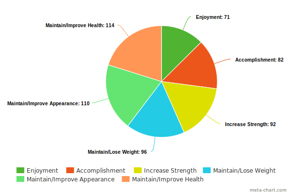

Life as a Gym AR Glasses
“Life as a Gym: Smart Glasses that encourage exercise in a busy life through thoughtful time management and a deep understanding of one’s lifestyle.”
Why did we design Life as a Gym?
Our motivation for creating LG is a combination of several different factors. Prior to deciding to go with Life as a Gym glasses as our concept, we conducted background research in various topics; one of the statistics we found was approximately 40-50% of all college students do not get the recommended amount of physical activity, that is, they do not do enough physical activity in a given day to constitute exercise from a medical perspective. This statistic was a driving force throughout our project and stuck with us as one of our key motivations throughout the course. This statistic was found out after we completed the majority of the coursework, but we found it was a good justification that helped validate our design and concept.
Product Features
Life as a Gym Glasses have 6 distinct features which make up the product.

Augmented Reality (AR) Camera's
AR Camera's actively scan the environment and enable the AR interaction
Schedule and Time Integration
LG integrates itself into your schedule; knowing where you need to be and when

Navigation
LG has built in navigation which guides users during their walking and running exercises

Voice & Input Assist
Users can hear LG glasses speak and can give the glasses commands through their voice

Exercise Moments
LG smartly manages your time and recommends activities and exercises that fit into your schedule

Companion App
Comes with a companion application which provides additional info and challenges.
Research Process
To gain a better understanding of our target audience, we developed 5 distinct research questions which needed to be answered. We then paired up each research question(s) with the methodology which would get the best data to answer it. Our process was as follows:

Surveys
How do students learn exercises?
What exercises do students do?
What tools do students use when exercising?

Diary Studies
What motivates students to exercise?
What factors prevent students from exercising daily?

User Enactments
A set of enactments that helped us decide on an idea feature set and learn about restrictions and privacy concerns
Surveys - Deep Dive
When we began this project, we had no previous knowledge or background information regarding what types of exercises are popular, or what resources are target audience uses when learning about exercise. Additionally, because we were in the beginning phases of the project we wanted to have quantitative evidence to help inform our future design decisions. With these two conditions, we decided a survey would be the best tool available to gather large quantities of data on our target audience, and the types of questions we needed to asked fit a survey format well. Through the use of our survey, we ended up finding several interesting insights that ended up serving is pillars throughout the rest of the project, they were:
What type of exercise activities do you habitually do?

What resources do you use to learn exercises?

What barriers prevent you from exercising?

What motivates you to exercise?
Diary Studies - Deep Dive
The goal of the diary study was to gain insight into the day-to-day exercise motivations and barriers that our participants faced. In particular, we were hoping to gain insight into novel barrier situations which could not accuratly be captured using a survey. We chose to use a diary study because it allowed us to capture data over a series of days; this was advantageous because we didn't have to ask participants to recall a lot of information, they could instead give us direct answers based on their daily experience.
User Enactments - Deep Dive
Because the idea behind our technology is fairly new and not something most people have experienced, we wanted to gain more information about how they would expect the technology to behave in certain scenarios. To learn more about this, we created 8 scenarious which were each designed to solicit feedback about a particular feature or design decision. We created scenarious which tackled privacy, public exercise, trip planning, navigation, system input types (audio, touch, gesture), and more. These informed our design decisions in a major way, and ended up making re-think entire portions of our original system design due to feedbaack we receieved. For example, we changed the entire privacy system of the glasses based on how uncomfortable users felt while acting through the privacy-related scenario. The following are images showing how we conducted our enactment:


Research Results
After conducting all of our research, we eventually arrived at three major themes which ended up guiding our design process, these themes were:
Time Management
Our design needs to be considerate of peoples time, and needs to try and find exercise opportunities which fit into their schedule.

Social Acceptance
Our design needs to accept social norms, and make sure users and other around them are comfortable interacting with the system and performing the actions asked of them.

Privacy Concerns
Privacy is a key component that needs to be respected at all times, users need to be able to tell the system exactly what they want it to look at and monitor.
Design Process
After conducting all of our research methodologies, we moved onto the design phase of the project, which consistd of (insert number of steps here) steps.
Ideation
We didn't want to become fixated on any one particular solution at this point, so out first step was creating an 8 x 10 matrix table with the sole purpose of generating as many ideas as possible. Using this method we were able to generate 80 unique ideas which all had the potential to solve our design problem.


Narrowing the Selection:
We narrowed our final selection down to 3 potential choices based on 3 select criteria: How well do they solve the problem? How feasible is this solutions? Would our target audience be interested in using this solution?

A toy kids can carry around which tells them stories about museum exhibits

An explorer kit kids can use to act like professionals and engage with materials as "experts"
A 3D printing exhibit which gives kids a souvenir and a story
Prototyping - 1st Try
For our first prototype, we used an electronics kit called LittleBits, and paired it with a toy bear stuffed animal. By using LittleBits, we were able to create a solution which allowed us to play audio through our phones by pushing a button on the bears back pack.


Prototyping - Feedback
After creating our prototype, we wanted to test it out with users and other UX professionals to get their opinion on it. As was expected, our prototype had a few major concerns that needed to be addressed:
- The bear as a whole was too large, children couldn't carry it around easily
- Because of the internals, the bear became too heavy to carry around and fatigued children easily
- There was concern about the bear being left behind as kids run throughout the museum
- LittleBits was too limited in its implementation and couldn't effectively communicate the product
Prototyping - Final Interation
After receieving feedback on our first prototype, we made many changes. We switched our stuffed animal to a much smaller slap-bracelet, which meant less weight and bulk to carry around. Using a slap bracelet also means the toy will always be attached to the kid, making it less of a burden on them. Secondly, we changed the technical implementation; we swapped out the LittleBits system in favor of an Arduino because of the added control and flexibility to the project.


Prototyping Limitations
Our second prototype ended up having a few issues with its implementation, the biggest being we couldn't actually integrate the Arduino system into the prototype. After working on it for several weeks, we were unable to find a way to shrink the prototype down to a small enough size to fit into the turtles shell, so we ended up leaving them as separate components in the end.
Reflections
This project was unique because it revolved around the concept of improving the museum experience, which is not something I had much experience with before starting the project. However, that made the project more interesting, as I had the opportunity to learn about an entirely new field with its own set of rules and restrictions.
The toughest part of this project was narrowing down our solution concepts. There are so many possible ways to improve the museum experience for kids, and it took a long time for us to decide how exactly what approach we wanted to take. However, after going through the entire process, I think we did a good job exploring many different avenues to tackle this issue.